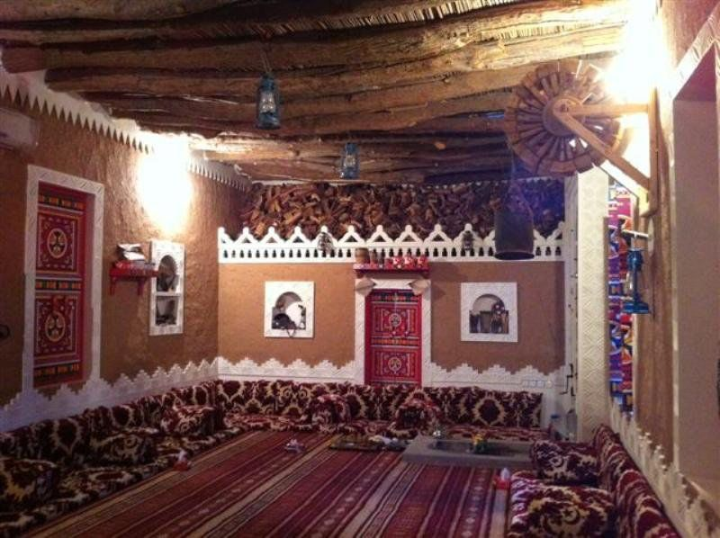

تقاليد راسخة
يتسم المجتمع السعودي بحسن الضيافة والكرم، حيث تُعدّ استضافة الضيوف جزءًا أساسيًا من الثقافة والتقاليد السعودية. ومن أبرز مظاهر ذلك وجود "المجلس" في معظم البيوت السعودية، وهو مساحة مخصصة لاستقبال الضيوف وعقد المجالس الاجتماعية. في المجلس، يحرص المضيف السعودي على تقديم ختلف أنواع الضيافة، من القهوة العربية والتمر إلى المأكولات والوجبات الخفيفة، تعبيرًا عن الترحيب والتقدير. وتتم الاستضافة وفق تقاليد راسخة، حيث يجري استقبال الضيوف بحفاوة، مع مراعاة أصول الذوق والاحترام في التفاعل، مما يعكس روح الكرم والأصالة في المجتمع السعودي